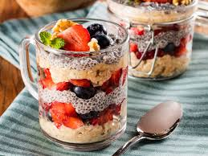

Overnight Oats
Ingredientes
- 30g de farelo de aveia (se for intolerante, substitua por sem glúten)
- 80ml de leite desnatado ou leite vegetal
- 15g de iogurte natural desnatado ou iogurte vegetal(opcional)
- Fruta picada
- Canela a gosto (opcional)
Modo de preparo
Misture tudo em um pote e leve à geladeira de um dia para o outro. Sirva com frutas.
Informações nutricionais com 30g de morango e banana prata picada
A receita tem 146 calorias, 35g de carboidratos, 7g de fibras, 9g de proteína e 2g de gordura.
← Voltar